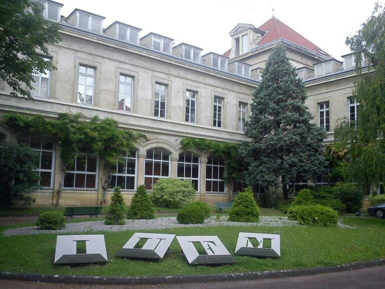
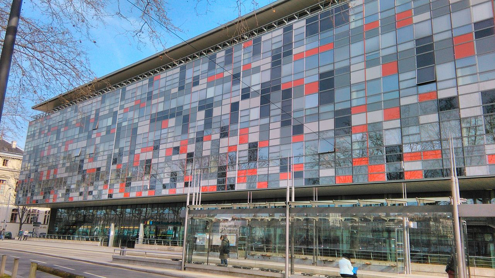

Tratamente pentru strabism
Despre strabism știm deja că este o afecțiune care poate să împiedice dezvoltarea armonioasă a analizatorului vizual. Aproape 5 procente din copii au această afecțiune care poate avea consecințe negative în dezvoltarea socială și profesională. Strabismul este un grup heterogen de boli și tratamentul este, de asemenea, complex și trebuie adaptat fiecărui caz în parte. De cele mai multe ori, acesta se întinde pe mai mulți ani necesitând un efort susținut atât din partea copilului cât și a părinților și a personalului medical. La Clinica ArtVision Med avem experiență de peste 10 ani și rezultate excelente în tratamentul multor tipuri de strabism.
Condiția de succes este însă dependentă de precocitatea cu care se aduce copilul la medic. Respectiv, acesta să înceapă tratamentele mult înainte de vârsta de 6-7 ani, ideal la 3-4 ani sau chiar mai devreme, în funcție de vârsta la care apare deviația. Mai multe informații despre tratamente și intervenții chirurgicale la strabism

Importanța tratamentului precoce
Prima și cea mai importantă urgență este depistarea ambliopiei. Iar acest lucru să se întâmple la o vârstă cât mai fragedă. Depistarea timpurie a ambliopiei (vederea slabă din cauza lipsei de paralelism a axeor vizuale) este așadar necesar a fi făcută înainte de vârsta școlară. Altfel, fără o corecție, fără terapia ambliopiei ochiul care deviază mai frecvent practic va deveni neutilizabil.
Să mai spunem că ambliopia apare cam la 40% din copiii cu strabism. Și că aceasta este principala cauză a pierderii vederii la un ochi pentru populația cu vârsta între 20 și 70 de ani.
A doua mare dificultate este legată de pierderea vederii binoculare. Aici este inclusă și vederea stereoscopică, respectiv 3D. Ce înseamnă asta? Că nu pot fi apreciate corect distanțele. Cu implicații în șofat sau practicarea unor meserii de mare creativitate, munca la înălțime, medicina respectiv chirurgia și exemplele pot continua. Sportul de exemplu…
Metode terapeutice în tratamentul strabismului
Tratamentul pentru strabism depinde de cauza, tipul şi gradul de deviaţie a ochilor. Cele mai frecvente metode sunt corecţia viciilor de refracţie cu ochelari sau lentile de contact, ocluzia ochiului bun pentru a stimula vederea celui slab (ambliopia). Alte metode de tratament sunt exerciţiile ortoptice pentru îmbunătăţirea coordonării musculare şi a vederii binoculare. Nu în ultimul rând, și intervenţia chirurgicală are locul ei în corecția strabismelor și realinierea axelor oculare.
Iată de ce este foarte important să se depisteze şi să se trateze strabismul cât mai precoce posibil. Pentru prevenirea complicaţiilor care devin foarte devreme ireversibile.
